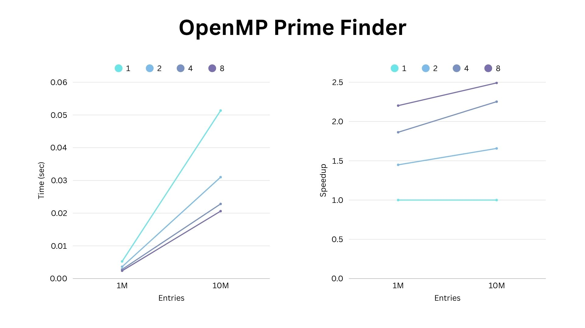
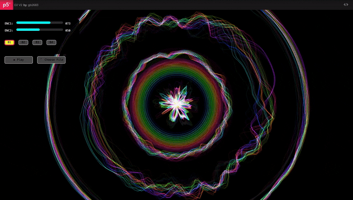
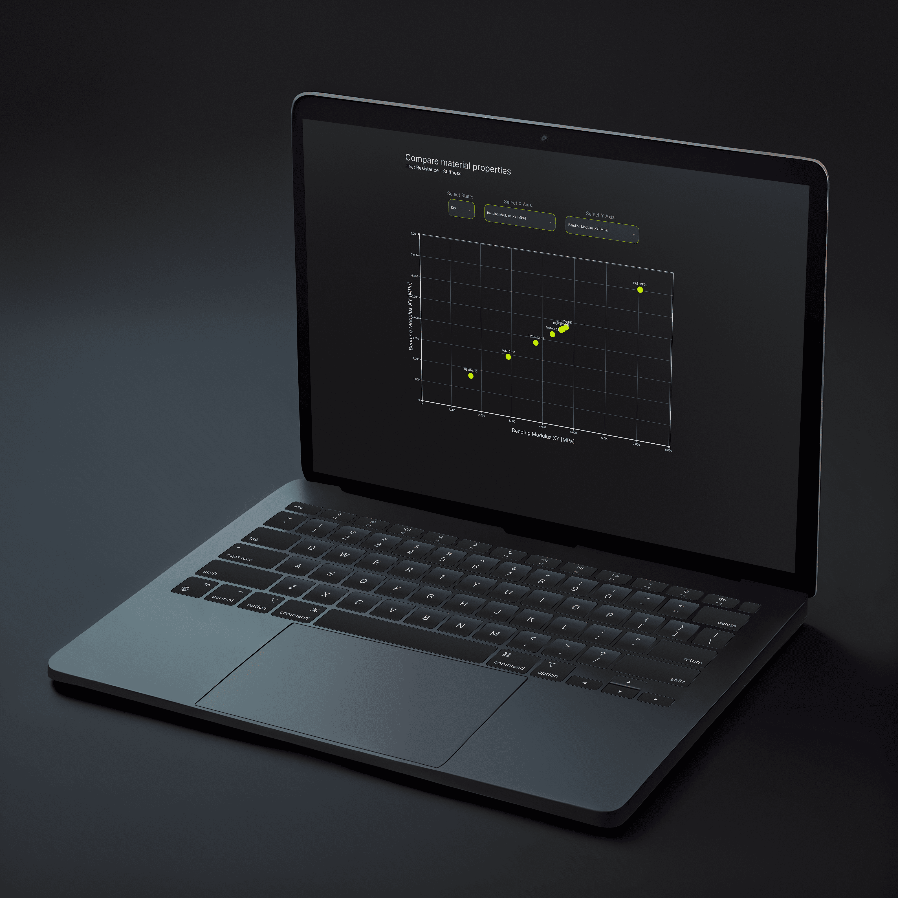
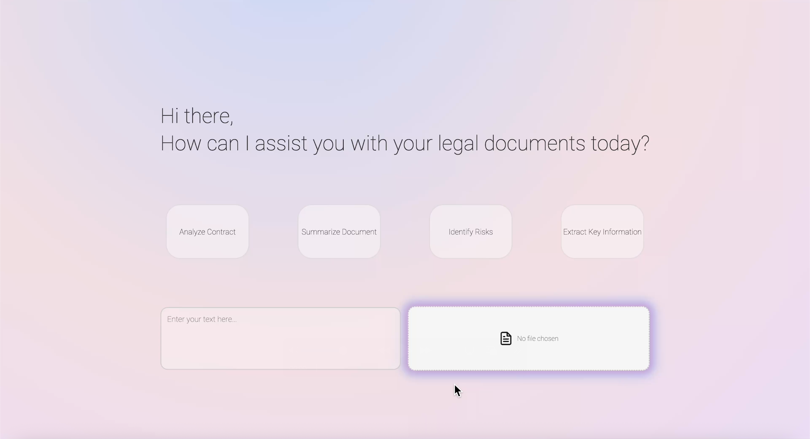
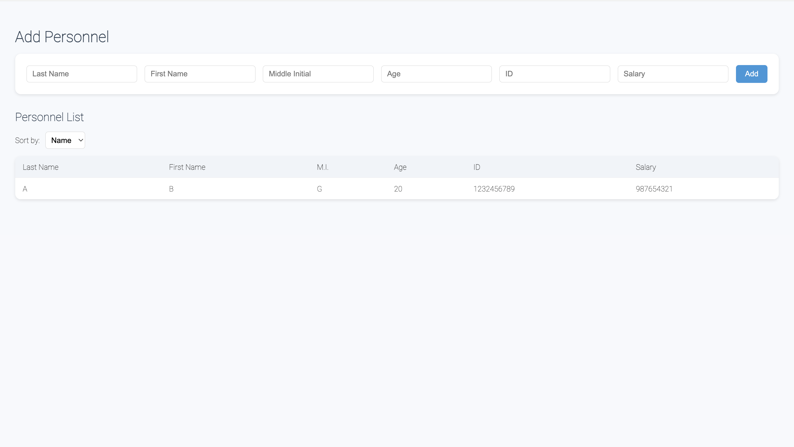

HARDWARE & SYSTEMS

4-Bit Register + ALU
Logisim-Evolution

Parallel Computing
High-Performance Computing Projects

Arduino MIDI Controller & Sensor Interface
Personal DJ MIDI Controller

Interactive Web Applications
AI-Powered Job Matching Platform

Hackathon Winning Project

Binary Search Tree-Based Personnel Record System
Logisim-Evolution

High-Performance Computing Projects

Personal DJ MIDI Controller